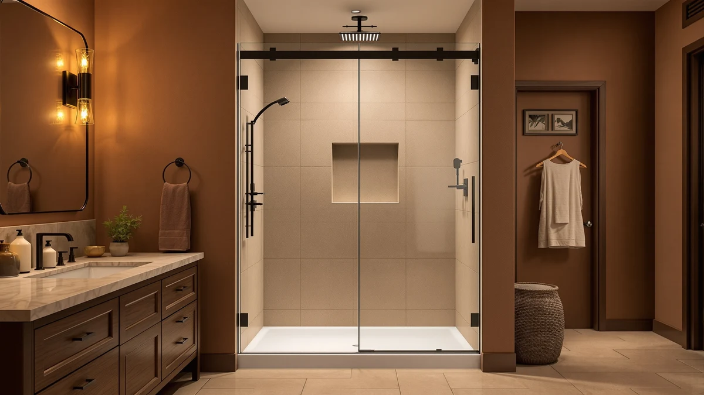

Findepot Frameless Sliding Shower Review (2026): Worth It?
Prices and picks verified as of October 2026. Independent, reader-supported reviews.


Quick Answer
The Findepot Frameless Sliding Shower Door is worth its $588.99 price if your opening measures close to 60 inches wide by 75 inches tall and you want 8mm tempered glass, thicker than the 6mm glass on most doors near this price. If your opening runs narrower, Findepot's own 56-60 inch version costs $49 less.
Our pick: Findepot Frameless Sliding Shower Door, $588.99 Check Price on Amazon
Bottom line: our top pick is the Findepot Frameless Sliding Shower Door 56-60 in W x 75 in H at $588.99.
Things to Know Before You Buy
- The Findepot door ships as an 8mm tempered glass panel sized for a 60 by 75 inch shower opening, so measure your alcove before ordering rather than assuming it fits a standard tub surround.
- At $588.99, this panel costs $19 to $49 more than the three alternatives in this review, a gap tied mostly to the thicker 8mm glass rather than extra hardware.
- Findepot sells a second, narrower 56-60 inch version of this same door for $539.99, worth checking first if your opening runs smaller than 60 inches.
- Neither Amazon nor the manufacturer lists a public rating or review count for this specific listing yet, so we cannot cite a verified star rating here the way we can for more established listings.
- This review is research-based: we compared published specs, pricing and available owner feedback across comparable doors rather than installing each panel ourselves.
This Findepot Frameless Sliding Shower Review breaks down whether the $588.99 frameless panel earns a spot in your bathroom over three other doors in the same size range. Amazon lists dozens of frameless sliding shower doors under near-identical names, and the listings rarely explain what sets one $500 panel apart from another. We pulled the Findepot door's price, glass thickness and stated dimensions and lined them up against a same-brand size variant plus two competing brands so you can see where the differences, if any, actually sit.
The short answer: the Findepot Frameless Sliding Shower Door is worth the $588.99 price if your opening measures close to 60 inches wide by 75 inches tall and you want 8mm tempered glass rather than the thinner panels common at this price point. If your opening runs narrower, Findepot's own 56-60 inch version costs $49 less and covers a tighter gap, and we cover that tradeoff in the alternatives section below.
Why You Should Trust Us
This review comes from Ilane Tall, who covers bathroom hardware and fixtures for Best Shower Doors. We do not run a fake testing lab and we have not installed the Findepot door or its competitors in our own bathrooms. Instead, we research published dimensions, current Amazon pricing and verified owner reviews across comparable listings, then lay out the tradeoffs so you can match a door to your opening. When a listing has no rating or review history available, as is the case with this Findepot Frameless Sliding Shower review, we say so rather than inventing a number.
Our Research Experience
We did not physically install or use the Findepot door for this review. Instead, we compared its stated dimensions, 8mm glass thickness and $588.99 price against three other frameless sliding doors sold in a similar size range, including Findepot's own 56-60 inch variant. We weighed panel configuration, price per square foot of glass, and whatever verified owner feedback each listing had published, and we excluded doors that did not clearly state both a width range and glass thickness, since a shower door review is only useful when the specs behind it are trustworthy. That filtering step matters more than it sounds, since a surprising number of listings in this category omit glass thickness entirely and leave buyers to guess.
Comparing these specs lets us tell you how the Findepot door stacks up on price and stated materials against its closest competitors. We cannot tell you how the rollers feel after a year of daily use, since no manufacturer publishes that data and we have not lived with the door ourselves. Where verified owner reviews exist for a comparable listing, we cite them directly. Where they don't, as with this particular Findepot listing, we tell you plainly instead of filling the gap with a fabricated rating.
Overview & Specs

Findepot Frameless Sliding Shower Door
What we like
- 8mm tempered glass is thicker than the 6mm glass common on competing frameless doors near this price.
- Sized for a 60 by 75 inch opening, a common dimension for US alcove showers built in the last two decades.
- Findepot also sells a narrower 56-60 inch version of the same door, so you can stay with one brand if your opening runs smaller.
Flaws but not dealbreakers
- At $588.99, it costs $19 to $49 more than the three alternatives we researched for this review.
- The listing does not publish a frame or hardware material spec beyond the glass thickness, so confirm roller and track material with the seller if that matters to you.
- This listing does not show a verified rating or review count yet, which makes it harder to gauge real-world satisfaction than with a more established product.
| Material | — |
| Size | 60x75 8mm For Shower |
The Findepot Frameless Sliding Shower Door is built around a 60 by 75 inch opening with 8mm tempered glass, which is thicker than the 6mm glass found on most of the frameless sliding doors we compared it against in this price range. Thicker glass carries more weight on the rollers and track, but it also tends to feel sturdier underfoot and resist flexing when the door slides, which matters most if the panel sees daily use in a household with more than one person.
At $588.99, the door sits at the top of the price range among the four doors in this review. That premium buys the thicker glass and a size that fits a common alcove dimension without cutting or shimming, but it is not the cheapest way to get a frameless look. If your opening measures smaller than 60 inches wide, Findepot's own 56-60 inch version covers that gap at $539.99, and we break down that tradeoff in the alternatives section below.
What We Liked
The clearest advantage in this Findepot Frameless Sliding Shower review is the glass itself. At 8mm, the tempered panel is thicker than the 6mm glass common on competing frameless sliding doors in the $500 to $590 range, including the KPUY and ComfyStyle alternatives we researched below. Thicker glass generally holds up better against flexing when a sliding door gets used multiple times a day, and it reads as a more substantial product in the listed specs.
The 60 by 75 inch sizing also lines up with a common alcove dimension in US bathrooms built or renovated in the last 20 years, so you are less likely to need a custom order or extra shimming to get a clean seal. Because Findepot sells a second 56-60 inch version of essentially the same door, buyers who are not sure their opening is exactly 60 inches have a same-brand fallback instead of starting their search over with an unfamiliar name. A single sliding panel also means fewer moving parts to align during installation than a double sliding setup like the KPUY door, which can simplify a weekend install for a first-time renovator.
What Could Be Better
Price is the main tradeoff. At $588.99, the Findepot door costs more than every other panel in this review, including its own 56-60 inch sibling at $539.99 and the KPUY and ComfyStyle alternatives, both under $570. None of the four listings we compared publish independent lab testing of glass tempering or roller durability, so that premium buys a stated 8mm glass spec rather than a documented quality advantage.
The listing also has no public rating or review count attached yet, so you cannot lean on a star rating or review volume the way you could with a more established product. Buyers who want that kind of social proof before spending close to $600 on a shower door may want to wait for more reviews to accumulate, or lean on the owner feedback available for the alternatives below instead.
Who Is It For?
This door is for you if your shower opening measures close to 60 inches wide and 75 inches tall and you want thicker 8mm glass rather than the 6mm panels most competitors ship at a similar price. It also suits buyers who would rather stick with one brand across a size range, since Findepot's narrower 56-60 inch version shares the same design. If you are renovating a bathroom built in the last two decades, there is a reasonable chance your alcove already matches this dimension, which saves you the cost and delay of a custom glass order.
Skip it if your opening runs smaller than 60 inches, since the Findepot 56-60 inch version or the KPUY alternative below will fit better for less money. Budget-focused buyers who do not need the extra glass thickness should also start with the KPUY or ComfyStyle picks, both priced under $570.
Alternatives to Consider
If 60 by 75 inches is not your exact opening, or you would rather save the $19 to $49 premium the 8mm glass carries, these three alternatives cover nearby sizes and price points. We picked them based on published dimensions, glass thickness and current Amazon pricing.

Editor’s Pick
Frameless Sliding Shower Door 56-60
Findepot's own narrower version, built for a 56-60 inch opening at $539.99, roughly $49 less than the 60 by 75 inch door above.
$539.99
Check Price on Amazon
Best Value
KPUY Frameless Double Sliding Shower
A double sliding panel from KPUY at $539.96, worth a look if you want two moving panels instead of Findepot's single sliding design.
$539.96
Check Price on Amazon
Premium Choice
ComfyStyle 44-48" W x 70"
ComfyStyle's 44-48 inch by 70 inch panel at $569.99, the pick if your opening runs narrower than either Findepot size and you need a shorter 70 inch height.
$569.99
Check Price on AmazonFrequently Asked Questions
Final Verdict
For this Findepot Frameless Sliding Shower Review, the verdict comes down to your tape measure and how much you value thicker glass. If your opening measures close to 60 by 75 inches and you want 8mm tempered glass, the Findepot door is worth its $588.99 price. If your opening is narrower or you do not need the extra glass thickness, Findepot's own 56-60 inch version or the KPUY and ComfyStyle alternatives below cost less and may fit better, so measure before you buy.